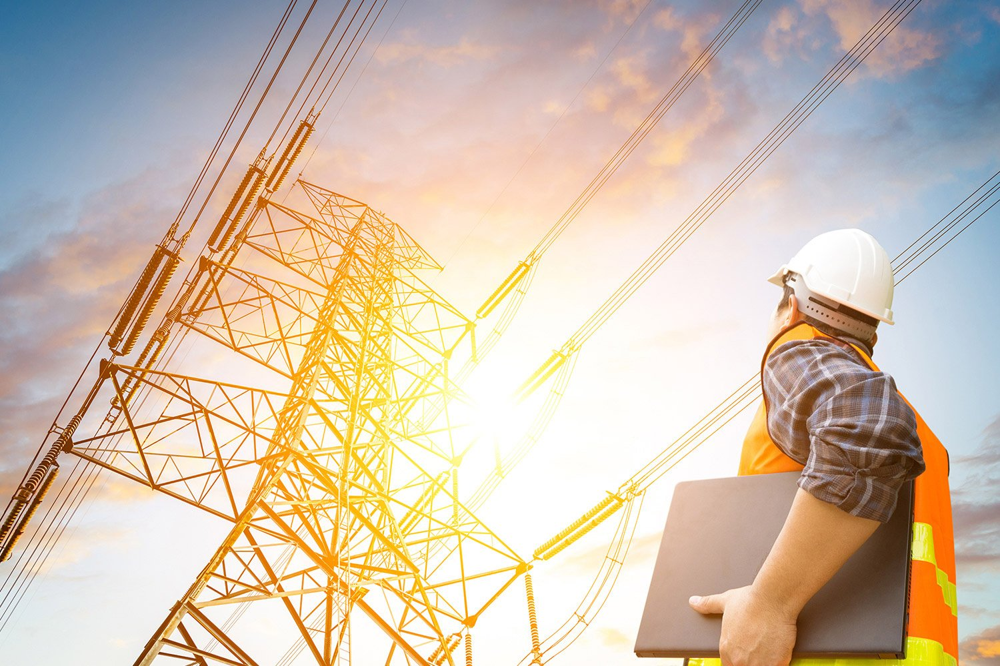

О профессии
Энергетик — это специалист, занимающийся эксплуатацией, обслуживанием и ремонтом энергетического оборудования и систем энергоснабжения.

Обязанности энергетика
Основные обязанности энергетика включают:
- Мониторинг и контроль работы энергетического оборудования
- Проведение профилактических и ремонтных работ
- Обеспечение бесперебойного энергоснабжения
- Соблюдение правил техники безопасности
Необходимые навыки
Для успешной работы энергетиком необходимо обладать следующими навыками:
- Знание электротехники и энергосистем
- Умение читать схемы и чертежи
- Навыки ремонта и обслуживания оборудования
- Способность работать в команде
Карьера и перспективы
Карьера энергетика может включать различные направления, такие как:
- Работа на промышленных предприятиях
- Энергетические компании
- Строительные компании
Перспективы карьерного роста включают должности старшего энергетика, начальника энергетического отдела и другие руководящие позиции.